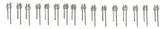
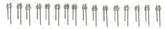
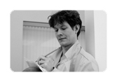

| Jump to: Postdocs and Researchers, Graduate Students | |
 |
Matt Wilson |
 |
Collyn Messier |
| Postdocs and Researchers | |
 |
Francisco Flores Francisco is interested in identifying and manipulating brain structures that control specific behavioral states, with a focus on general anesthesia and sleep. |
Fanuel Muindi Fanuel studies the neural pathways involved in the loss of consciousness during sleep and general anesthesia. |
|
 |
Jon Newman Jon is attempting to understand how cortical and hippocampal circuits consolidate memories. He also develops new open-source tools for real-time electrophysiology. |
 |
Hector Penagos Hector studies the interactions between the hippocampus and anterior thalamus during spatial navigation and sleep. |
Christa Van Dort Christa uses in vivo electrophysiology, microstimulation, and pharmacology to study the mechanisms of sleep and anesthesia. |
|
Carmen Varela Carmen studies the interactions between the thalamus, hippocampus and neocortex during episodic memory consolidation. She uses multiple electrode recordings from the three sites in awake animals to study neural activity during different stages of episodic memory formation. |
|
 |
Jun Yamamoto Jun developed motorized microdrives for better yield and stability. As a research scientist in the Tonegawa lab, he strives to push the limits of tetrode recordings in mice. He performs large-scale multi-unit recordings on transgenic mouse lines such as EC3-TTX and CA3-TTX to identify memory replay during waking and sleep. |
| Graduate Students | |
|  | Greg Hale Greg studies the impact of the hippocampal theta rhythm's wave-like propagation on sequential firing patterns of place cells. |
 |
Hannah Wirtshafter Hannah studies the integration of spatial and reward-contingency information in the hippocampus and its target structures. |
| back to top | |
© 2014 Wilson Lab ::: 43 Vassar Street, Room 46-5233 ::: Cambridge, MA 02139